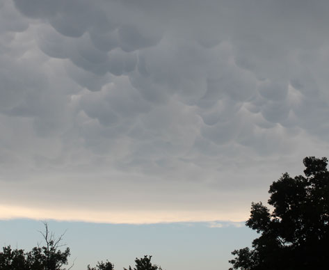
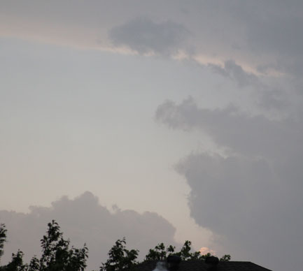
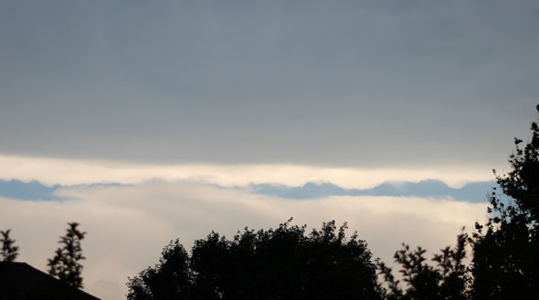
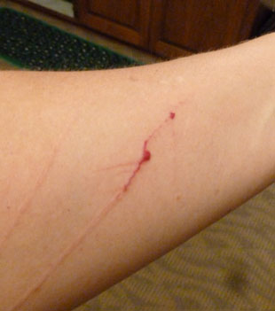

2013
| The weathermen were warning all day that Friday
of a severe tornado. After the very recent devastation in nearby
Shawnee and Moore, we decided to take them seriously. Before it came
close we were out looking at the sky - it was certainly strange that
night. Then when they said it was headed straight for us, we joined
a couple hundred other OKC residents in a nearby underground parking
garage. I can assure you there were at least 80 more people in that
garage than would otherwise have fit, if it hadn't been for the leadership
of my sweetie and some random drunk guy directing traffic.
The tornado did something none of us has ever seen before, it took a
nearly right-hand turn. So it veered away from us but sadly toward
others. It did not cause the devastation that the May 19th &
20th storms did, but quite a few lives were lost due to the the immediate
storm and the flash floods. We were very grateful to come out
unharmed. |
|
 |
|
| The sky doing strange things early that afternoon. | My cute hubby |
 |
 |
| There were three different cloud things going on here - the high flat
ones, the dark ragged ones, and the tip of a thunderhead just visible above that roof. |
More sky strangeness. |
|
 |
|
| This pilot is either very brave or is a thrill-seeker - it was obvious even to non-weather savvy people like us that bad things were in store very soon! | This was our only injury - Feisty got anxious to get back into the
house and gave me a bit of her claws as I put her down. I was ready to be home too! |